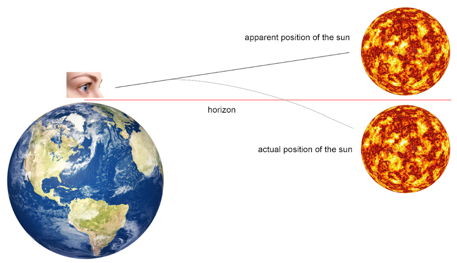

FACT 1
Why does the sun rise in the east?
The earth is spinning on it's axis and it spins toward the east, at a rate of roughly 1037 miles per hour (mph).
And since Earth is a sphere revolving arounf the sun only one part of Erth is illuminated at a time causing cycle of day and night.
Thus creating an illusion of Rising in the East and setting int he West.
FACT 2
The Longest and Shortest Daylight
Which capital city has the longest and shortest days? The correct answer is Reykjavik, the capital of Iceland, located in a latitude of 64 degrees north.
The northernmost capital city of the world has the longest hours in the summer and the shortest hours of daylight during the winter.
On June 21, Reykjavik enjoys 21 hours and 45 minutes of daylight. On December 21, the Sun barely rises at 11:20 am, rests low in the horizon, until it vanishes around 3:30 pm.
FACT 3
When Does Sun actually Rise and Set
The next time you see the Sun going down at your favorite location, it will actually be already gone.

Why? It occurs because of a phenomenon called atmospheric refraction. In other words, light "bends" when it goes from a less dense medium to a more dense medium.
You can see this in how your legs look shorter and bend underwater.
The same thing happens with the light coming from the Sun, as it goes from the vacuum of space into Earth's atmosphere.
So, the sunlight coming from below the horizon bends around the Earth, and you see an image of the sun above the horizon.
What you're seeing is the apparent Sun, not the actual Sun position.
FACT 4
Doesn't dust or pollution brighten the colors?
The notion that dust and air pollution brighten sunrises and sunsets is a myth.
In fact, they have the opposite effect.
Pollutants enhance light modification at low sun angles. This causes a reduction in the total light reaching our eyes and the overall brilliance of the sunrise.